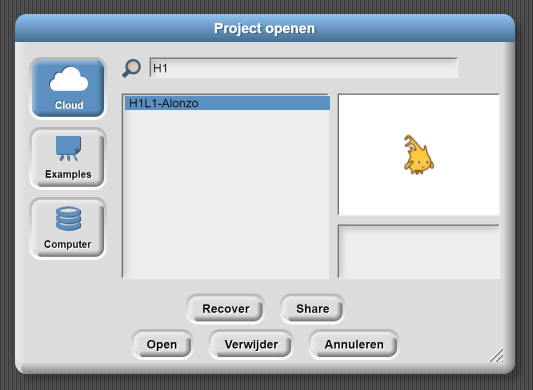
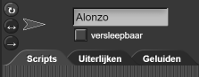
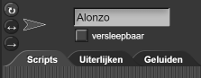

Het delen van je game
Op deze pagina leer je hoe je je game kunt delen via een link en kunt openen op
een mobiele telefoon.

- Zorg ervoor dat je project opgeslagen is.
- Kies 'Open...' in het bestandsmenu en selecteer het bestand uit je projectlijst. In deze les: 'H1L1-Alonzo'. Klik 'Delen/Share', zie de video hieronder.
- Er wordt eerst gevraagd of je zeker weet dat je het wilt publiceren (Are you sure...). Klik op 'Ja'. Kies daarna 'Open' of'Annuleren' om het menu te sluiten, welke van de twee maakt niet uit.
- Kopieer de URL (het webadres) bovenaan in je browser. Je kan deze link nu naar iemand sturen om je game te delen.
De link ziet er zo uit: https://snap.berkeley.edu/snap/snap.html#present:Username=...&ProjectName=H1L1-KlikAlonzo.
Je kan ook een kortere URL maken via Tiny URL om het typen van het webadres simpeler te maken.
Om bestanden snel te vinden in een lange lijst, typ je (een deel van) de naam (bv H1) in de zoekbalk
van dit venster. Zie afbeelding.
-
 Log uit en laat je partner inloggen. Open de gedeelde link van je game.
Log uit en laat je partner inloggen. Open de gedeelde link van je game.
Sla het project ook op in je partners account. Nu heb je allebei een versie van het project.
Let op! Je hebt zojuist een kopie gemaakt. Een verandering op het ene account is niet automatisch een verandering op het andere account; daarvoor moet je eerst opnieuw de URL van het project delen (en bewaren).
Om Alonzo te laten werken op een mobiele telefoon, moet je de optie 'versleepbaar' uitvinken.


-
Laad de game op een mobiele telefoon:
-
Apple iOS
- Open de project-URL van stap 3 in Safari.
- Bovenaan het Safari-scherm, druk op het deel icoon, selecteer dan 'Toevoegen aan beginscherm' uit het menu dat verschijnt.
-
Android
- Open de project URL van stap 3 in Google Chrome.
- Druk op het ☰ instellingen icoon, selecteer 'Toevoegen aan beginscherm' uit het menu dat verschijnt.
-
Apple iOS

met vrienden of familie door ze de URL te sturen via e-mail, SMS of sociale media!